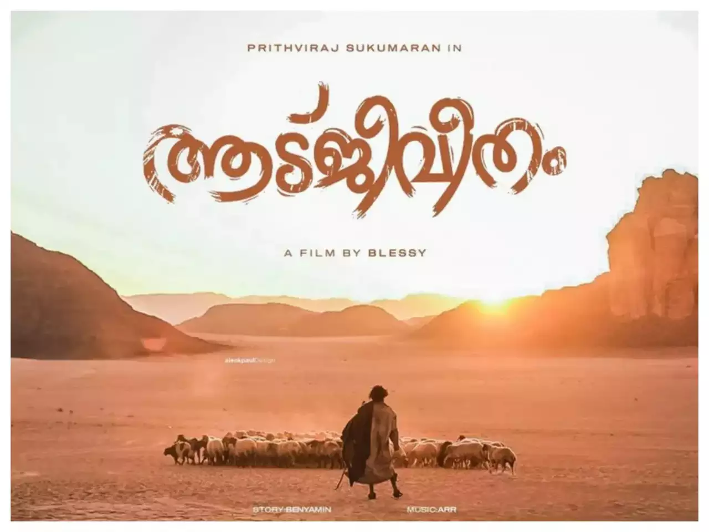
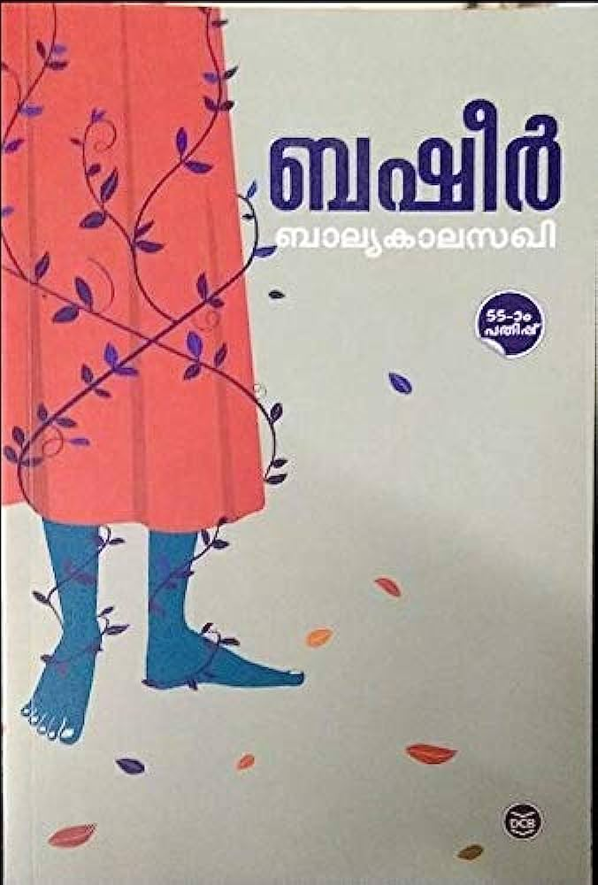
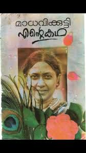
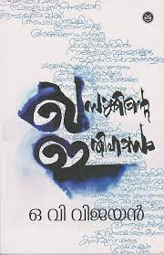
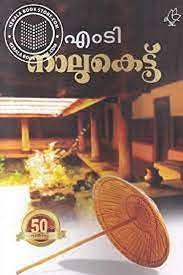
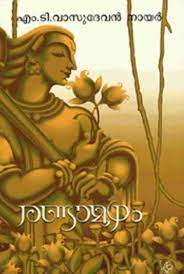

BOOK GALLERY

Aatujeevitham
Benyamin
Goat Days is a 2008 Malayalam-language novel by Indian author Benyamin.

Balyakalasakhi
Basheer
Balyakalasakhi is a Malayalam romantic tragedy novel written by Vaikom Muhammad Basheer

Ente katha
Madhavikutty
Ente Kadha (My Story) is an autobiography written by Kamala Surayya (Madhavikutty) in the year 1973.

Khasakinte Ithihasam
O.V Vijayan
Khasakkinte Itihasam was inspired by the Ottupulackal family's stay at a village called Thasarak near
Palakkad for a year

Nalukettu
M.T. Vasudevan Nair
Naalukettu remains a classic in Malayalam fiction. It contributed to the renewal of a literary tradition
initiated by S. K. Pottekkatt

Randamoozham
M.T. Vasudevan Nair
Randamoozham (English: The Second Turn) is a 1984 Indian Malayalam-language mythological drama novel
written by the Indian author M. T. Vasudevan Nair